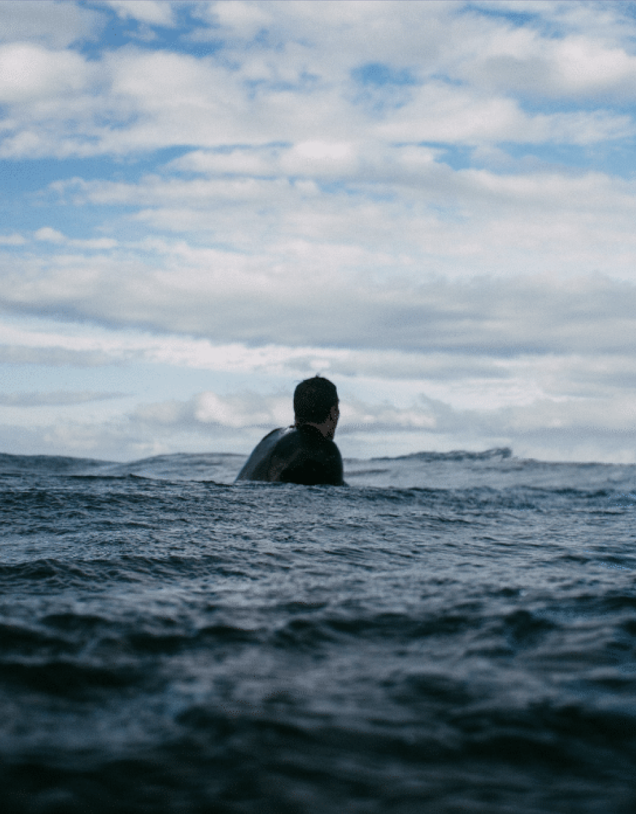

Name: Noam Broder
Alter: 15 Jahre
Beruf: Applicationsentwickler in Ausbildung
Über Mich
Mein Name ist Noam Broder, ich bin 15 Jahre alt und wohne in der Ostschweiz. Seit dem Sommer 2025 mache ich meine Lehre als Applikationsentwickler und verbringe meine Tage damit, Code zu schreiben, neue Technologien zu entdecken und Probleme zu lösen. Was mich an der Informatik fasziniert, ist die Kombination aus Logik und Kreativität – man kann buchstäblich aus dem Nichts etwas Nützliches erschaffen. In der Schule und im Betrieb lerne ich täglich dazu und freue mich auf alles, was noch kommt.
Prägende Erlebnisse

Ein besonderes Erlebnis war mein erster echter Bug, den ich selbst gefunden und behoben habe. Nach stundenlangem Suchen war es ein einzelnes fehlendes Semikolon – seitdem achte ich auf jedes Detail. Auch mein erster Schultag in der Berufsschule hat mich geprägt: plötzlich sassen da Dutzend Gleichgesinnte, die genauso für Technologie brennen wie ich. Solche Momente bestätigen mir, dass ich den richtigen Beruf gewählt habe. Ausserhalb der IT haben mich Erlebnisse wie mein erster Snowboard-Kurs gelehrt, dass Durchhalten und Übung immer zum Ziel führen – egal ob auf der Piste oder beim Coden.